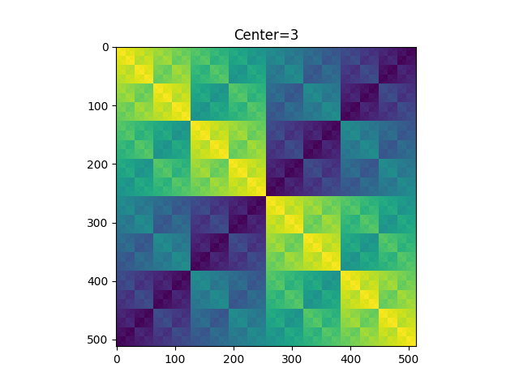
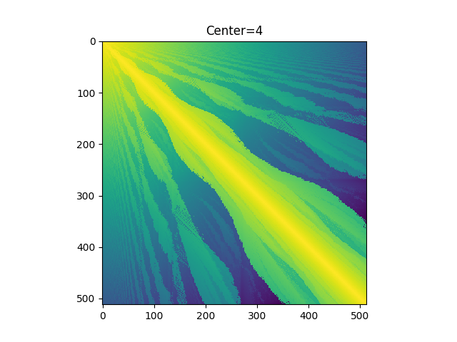

Computing for genus 2 curves over number fields
Hugo Nartz is working towards building databases of genus 2 curves over number fields. As parts of such databases, we will want to compute invariants of genus 2 curves over number fields. This spreadsheet details what has been implmented and where, as well as what we might want but don't yet have. This spreadsheet is a community resource; if you have things to add it to, whether it be links, notes, difficulty ratings, or additional invariants, please, please go ahead and add them.
Nim arrays and a cash prize
Construct an infinite 2D array of integers as follows. Fill in the first row and first column with the same finitely supported permutation of the non-negative integers. Fill in every other entry in the array with the minimal excluded value among all entries directly above or directly to the left of the entry.



When the permutation is trivial, one obtains a nim-sum addition table (bitwise XOR). When the permutation is a transposition swapping 0 and a number one less than a power of 2, the table differs from a nim-sum addition table in finitely many entries; this is what is shown in the middle image. For general finite permutation (such as the right image), it is conjectured that the resulting array admits a 2-power-scaling limit, but this is open; see [AC10]. I am offering a $500 prize for anyone publishes a paper resolving this conjecture.